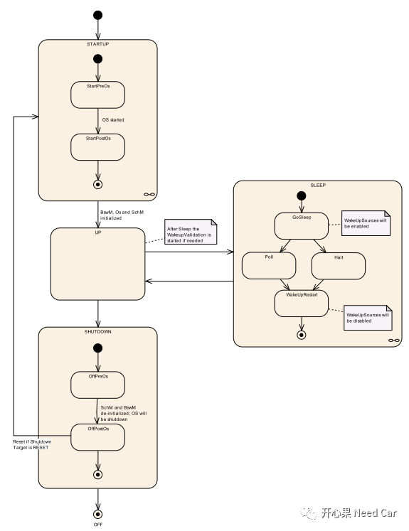
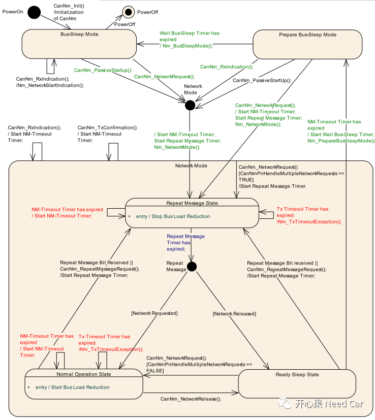

前言
正如标题所示，节点唤醒等于网络唤醒吗？如果当前节点有网络管理，我给的答案很明确，不是！之所以要写这个主题，是因为实际工作中，接触的很多工程师对这两个概念有点混淆，因此本文侃侃这两个概念。注意，本文基于节点有网络管理的前提进行讨论。
Autosar EcuM
Autosar的模块划分很细，分工也很明确，也正因如此才使得软件有了层次，即分层。同时，也使得抽象模块具有更好的跨平台移植性。
这里说一下EcuM模块，本文不讲EcuM功能，但为什么提EcuM呢？EcuM即Ecu Manager，这样直白的解释，我们应该清楚了，EcuM就是管理Ecu的。Autosar中,EcuM使用Phase、Mode、State表示Ecu各个状态，每个层级对内对外可见性不同，EcuM状态图如下所示：

由上图是不是可以看出什么？这既是我们常说的“节点唤醒”，说的更具体一点就是EcuM切换到Run Phase时，节点唤醒。如果要从外部评判节点唤醒，就是外设功能供电且正常工作，可以在电源中看到电流达到正常的工作电流。但此时网络唤醒了吗？
Autosar xxNM
这里xx指总线类型，CAN/Flexray/Ethernet等。本例以CANNM为例讨论。刚才提到EcuM进入RUN Phase阶段即我们常说的“节点唤醒”，和网络唤醒等价吗？说到这里，我们应该都清楚了，这本就不是一回事。节点唤醒不能看作是网络唤醒。而且Autosar也给了我们很明确的答案，不然为什么又会分出CANNM呢？

如上图，这个答案给的是不是更明确一些，CANNM和EcuM干的就不是一件事，因此也就不能将两者等价。由上图可以看出，EcuM上电，网络从Bus Sleep Mode切换到Network Mode需要有附加条件，一般是如下两种情况满足其一，第一有网络主动请求（CanNm_NetworkRequest()），第二网络有被动唤醒请求（CanNm_PassiveStartup()）。如果没有外部请求，网络会一直在Bus Sleep Mode状态呆着，如果用Canoe等设备监控，可以看到当前节点不发任何报文到总线上，只能接收总线报文（EcuM在RUN Phase阶段时）。 总结来说，就是EcuM处于RUN Phase阶段是网络能进入Network Mode的充分必要条件。换成我们常说的就是：节点唤醒是网络唤醒的充分必要条件。 说到这里我们应该对这两个概念有了一定认知，如果当前节点有网络管理，且收到网络管理报文唤醒网络，那么总线必须先有一帧报文唤醒Ecu，Ecu进入了RUN Phase阶段，收到的网络管理报文才能送到上层模块（如EcuM,BswM,ComM,NM等），进而上层才能决定开启通信，报文才能外发到总线。如果收到非网络管理报文，Ecu会唤醒，也可以理解为Ecu被供电（主程序被周期调度），因为不是有效唤醒源，之后Ecu走下电流程。至于Ecu收到非网络管理报文保持Ecu唤醒多久取决于系统需求。